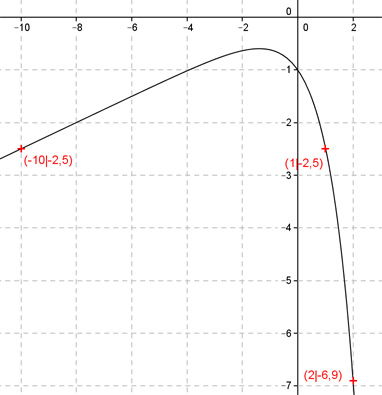
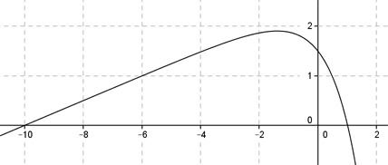

Aufgabe 119 Ergänzen Sie die Wertetabelle für den Graphen: y = 0,25x - ex x -10 oder 1 2 y -2,5 -6,9 y = f(2) = 0,25 * 2 - e2 = 0,5 - 7,4 = -6,9 gerundet  An welchen Stellen x die Funktion den Wert e annimmt, ist elementar nicht zu ermitteln. Abgelesen: Es sind 2 Stellen. Zur Berechnung wendet man ein Näherungs- verfahren an, hier die Regula falsi. x0 = gesuchte Nullstelle x1 * |y(x2)| + x2 * |y(x1)| x0 = ------------------------------ |y(x1)| + |y(x2)| fx = -2,5 eingesetzt: -2,5 = 0,25 * x - ex | +2,5 0,25 * x - ex + 2,5 = 0 Als Funktion: y = 0,25 * x - ex + 2,5 Die Nullstellen dieser Funktion (y = 0) entsprechen den gesuchten Werten für x.  Abgelesen: Nullstellen zwischen -9 und -11 und zwischen 0,8 und 1,2. Nullstelle x01 zwischen 0,8 und 1,2 mit Excel ermittelt: A B C D E F G H I J 0,8 1,2 0,5197 0,4746 0,4158 0,5696 0,9853 0,9943 0,9909 0,0543 0,9909 1,2 2,0624 0,0731 2,0437 0,0877 2,1314 2,1355 0,9981 -0,0155 0,9981 1,2 2,0624 0,0155 2,0584 0,0186 2,0770 2,0779 0,9996 -0,0033 0,9996 1,2 2,0624 0,0033 2,0616 0,0039 2,0655 2,0656 0,9999 -0,0007 0,9999 1,2 2,0624 0,0007 2,0622 0,0008 2,0630 2,0631 1,0000 -0,0001 1,0000 1,2 2,0624 0,0001 2,0623 0,0002 2,0625 2,0625 1,0000 0,0000 Die gesuchte Nullstelle ergibt sich nach mehreren Näherungen mit ausreichender Genauigkeit zu x01 = 1 gerundet. Die Nullstelle zwischen -9 und -11 ergibt sich nach dem selben Verfahren zu x02 = -10 gerundet. Weitere Erläuterungen zur Tabelle siehe Aufgabe 101.